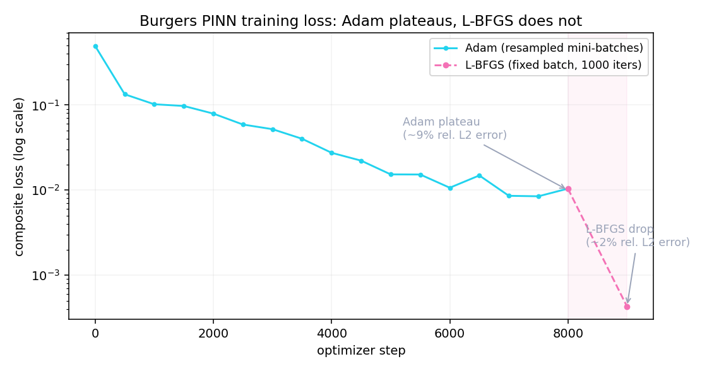
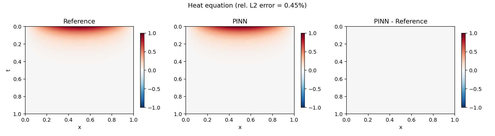
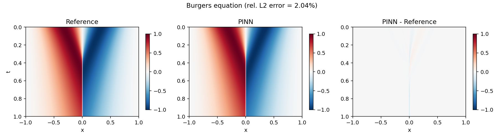

Solve partial differential equations (heat, Burgers) by training a neural network whose loss includes the PDE residual, computed with autograd. Implementation of the idea by Raissi, Perdikaris & Karniadakis (2019), validated against analytical solutions.
A PINN is a neural network uθ(x, t) whose loss combines three pieces: initial conditions, boundary conditions, and the PDE residual evaluated at collocation points in the domain. Partial derivatives are computed with torch.autograd.grad — no finite differences, no mesh.
This project implements two classic cases:
Adam alone gets the heat equation to 0.45% relative L2 error, well past the target. Burgers is a different story: Adam plateaus around 9%, above the 5% target. Following Raissi et al.'s own recipe — L-BFGS fine-tuning on top of Adam, on a fixed batch of points rather than resampling every step — brings it down to 2.04%.
Generic PDE:
Heat equation:
Burgers equation:
Composite PINN loss:
The heat equation converges cleanly with Adam alone (0.45% error, no fine-tuning). Burgers didn't — and the first fix attempt failed silently before the real fix worked.
Same recipe as the heat equation — 8000 epochs, 10k resampled collocation points — applied to the harder problem. Relative L2 error against the Chebyshev-spectral reference: ≈ 8.8%, above the 5% target. The loss curve below shows why: it decays smoothly at first, then stops improving past roughly step 5000 and oscillates around 0.01 instead of continuing down.

Raissi et al.'s own paper follows Adam with L-BFGS fine-tuning, so that was the obvious next step. The first run reported a lower loss (6.46 × 10⁻³ vs. Adam's 1.04 × 10⁻²) — but the relative L2 error against the reference came back identical to 15 significant figures to the pre-refinement number. The model hadn't actually changed at all.
The cause: torch.optim.LBFGS's line search assumes the loss is a deterministic function of the parameters — evaluating it twice at the same point must give the same value. The training loop resamples a fresh batch of collocation/boundary/initial points on every call, which is correct for Adam's stochastic mini-batches but turns the objective into a noisy function under L-BFGS. The line search's step-size probes land on different random realizations of the loss, can never reliably satisfy the Wolfe conditions, and the step gets rejected — silently, with no exception and no warning.
Sample one large batch of points once, before calling L-BFGS, and reuse that exact batch for every internal evaluation of the closure during refinement. That single change makes the objective deterministic, which is what the line search and the quasi-Newton curvature estimate both require. 1000 L-BFGS iterations on 40k fixed collocation points then brought the loss to 4.29 × 10⁻⁴ and the relative L2 error to 2.04%, clearing the 5% target.
torch.autograd.grad with create_graph=True.04-pinns/ ├── README.md ├── main.py # full pipeline: train, validate, save figures + metrics.json ├── requirements.txt ├── src/ │ ├── pinn.py # u_theta(x, t) network with Tanh activation │ ├── physics.py # heat and Burgers residuals via autograd │ ├── reference.py # Chebyshev-spectral reference solution for Burgers │ └── train.py # Adam + L-BFGS, composite loss (PDE + BC + IC) ├── tests/ # pytest: residuals, reference sanity, training smoke test └── figures/ # PINN-vs-reference comparison plots
heat_residual(u, x, t, α) function using autograd.gradburgers_residual(u, x, t, ν) functionTarget: relative L² error < 1% vs. analytical solution. Achieved: 0.45%, Adam only, no fine-tuning needed.
Target: relative L² error < 5% vs. high-resolution numerical reference. Achieved: 2.04%, after L-BFGS fine-tuning.
Adam alone plateaus at ~9% — above target. The remaining error after L-BFGS concentrates almost entirely in the thin internal layer at x = 0, not spread across the domain.
Learned solutions compared against the reference across the full space-time domain, plus the pointwise error (rightmost panel of each figure).

